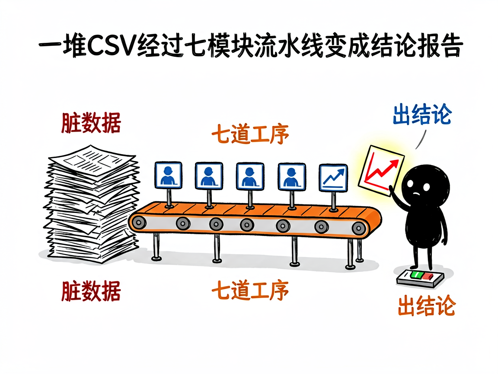

拿到一堆订单数据不知道从哪下手？—— claude-data-analysis 介绍
老板丢来一坨 CSV：三个月订单、用户信息、评论打分，让你"分析一下"。Excel 拉半天透视表，写了一堆 VLOOKUP，最后憋出三张图，老板问"所以结论呢"？claude-data-analysis 就是解决这个的：它是互联网数据分析技能集，7 大专业模块加一套通用六阶段流程，把数据从"质量检查"一路带到"结论报告"。

它到底能做什么
- 7 大专业模块：AB 测试、渠道归因、内容情感分析、转化漏斗、增长模型、LTV 预测、探索性可视化。
- 通用 6 阶段流程：数据质量 → 探索性分析 → 假设生成 → 可视化 → 代码生成 → 综合报告，任何数据集都能套。
- 入口技能统筹：一句话说明你要什么，它自动路由到对应分析模块。
- Pandas 优化：大数据集不卡死，聚合规则正确，不犯"平均数平均"的低级错。
怎么用
场景 1：电商全量分析 你：对这份 olist 电商数据做个全面分析。 AI：走六阶段流程——先查数据质量，再探索销售趋势，假设验证后输出带图表的分析报告。
场景 2：单点深挖 你：帮我分析用户评论的情感倾向。 AI：直接调内容分析模块，分词、打分、聚合出正负面主题。
谁适合用
- 电商/互联网运营，手里有数据但不会写代码的人。
- 数据分析师想加速日常取数和报告产出。
- 产品经理要做留存、漏斗、AB 结论的快速验证。
一点说明
本技能是入口型集合（互联网分析 7 模块 + 通用 6 阶段），深度分析能力依赖各子技能配合。数据集放入 data_storage 目录即可开始，自带 olist 电商样例数据可试跑。